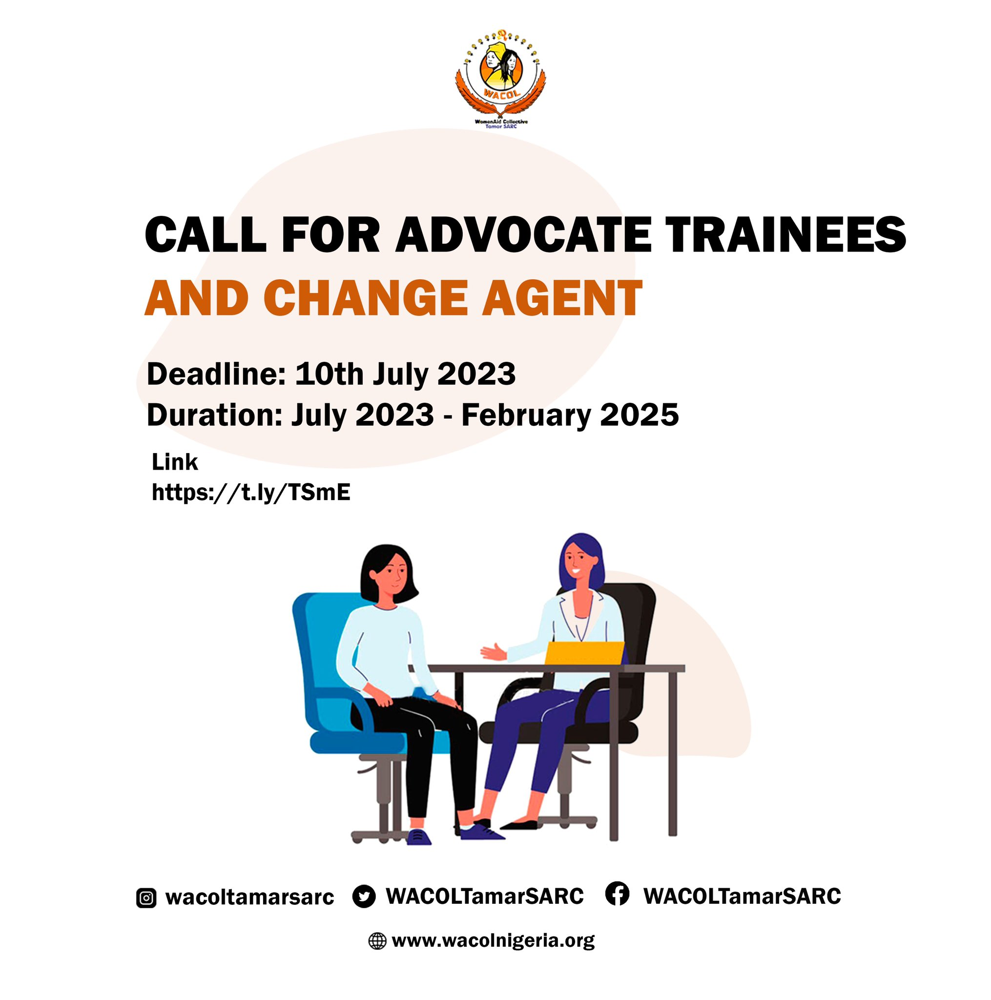
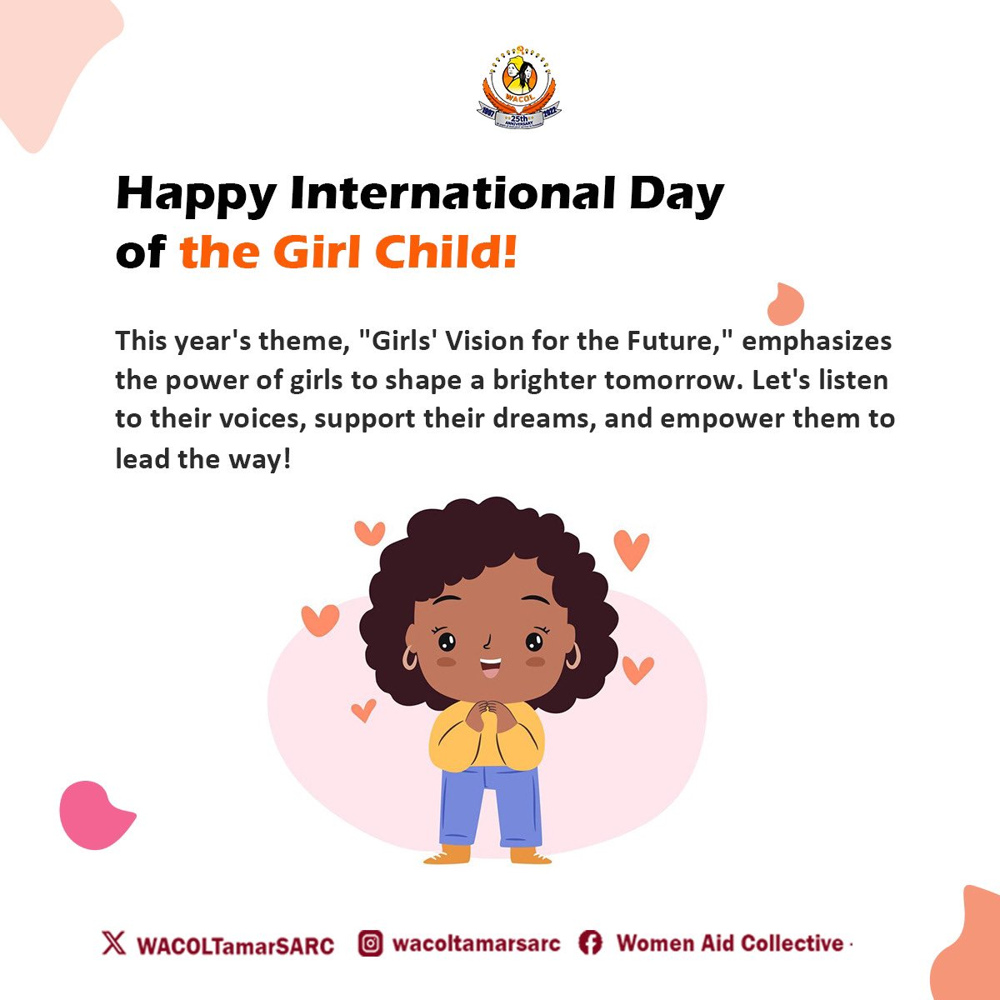

Women's Aid Collective (WACOL) — Enugu, Nigeria
Project Period: Mar 2023 – Jul 2025

Project Background
From March 2023 to July 2025, I had the privilege of working with Women's Aid Collective (WACOL) in Enugu, Nigeria, a vital organization dedicated to supporting survivors of gender-based violence (GBV). My role involved creating compelling visual content to amplify their advocacy efforts and raise awareness about GBV in the community.
Project Brief
The goal was to develop visual assets that would increase social engagement, improve brand visibility, and create compelling digital experiences to support WACOL's mission of helping GBV survivors.
Goals
- Design campaign assets that increased social engagement by 15%.
- Create marketing materials that improved brand visibility by 20%.
- Build responsive websites using HTML, CSS and JavaScript — boosting user engagement by 30%.
- Develop and distribute "Survivors Watch", a monthly newsletter sharing stories of GBV survivors, raising community engagement by 20%.
- Produce infographics and presentation decks for legal and advocacy reports.
Process
- Research and Community Understanding: I immersed myself in understanding the challenges faced by GBV survivors in the Enugu community to create culturally sensitive and impactful designs.
- Content Strategy: Collaborated with WACOL's advocacy team to develop messaging that would resonate with both survivors and the broader community.
- Visual Design: Created campaign materials, social media content, and digital assets that aligned with WACOL's mission while maintaining visual appeal.
- Web Development: Built responsive websites to improve online accessibility to WACOL's resources and services.
- Newsletter Creation: Designed and produced "Survivors Watch," a monthly newsletter that shared survivor stories and resources.
Unique Solution
The approach focused on creating empowering and hopeful visual content that honored survivors' experiences while advocating for change. The responsive websites improved access to critical resources, and the "Survivors Watch" newsletter created a platform for voices that were often unheard.
Tools Used
- Adobe Creative Suite (Photoshop, Illustrator, InDesign): For graphic design and layout.
- HTML, CSS, JavaScript: For web development.
- Canva: For social media content creation.
Experience Gained
This project was deeply meaningful, allowing me to use design skills for social impact. Working with WACOL taught me the power of visual storytelling in advocacy and the importance of creating accessible, empathetic design for vulnerable communities. The experience of boosting engagement through thoughtful design reinforced my commitment to using creativity for positive social change.
Project Name:
Women's Aid Collective (WACOL) — Enugu, Nigeria
Role:
Graphic Designer, Web Developer, Content Creator
Period:
Mar 2023 – Jul 2025
Organization:
Women's Aid Collective (WACOL) — Enugu, Nigeria


Copyright © All rights reserved | Design portfolio by Ugochukwu Ogoke